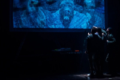
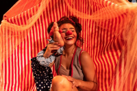

Programação dos Espetáculos | Festejo 2025
-
Espetáculo: LSOBREVIVENTE
16/05(Sexta-Feria) - 20h
- Grupo Teatro Faces - Primavera do LESTE/MT
- Teatro Juarez Machado
- Nena Inoue investiga suas origens apagadas pela história familiar feminina, em cena com seu filho Pedro Inoue, revelando memórias e ancestralidades ocultas.
-
Espetáculo: SINHADORES
17/05(Sábado) - 20h
- La Vaca Companhia de Artes Cênicas – Florianópolis/SC
- Galpão da AJOTE – R. XV de Novembro, 1383 - América
- Narrativas de senhores gays transformadas em um documento performativo sobre memória, resistência e orgulho.
-
Espetáculo: HOMENS PINK
19/05 (Segunda-feira) - 20h
- La Luna Cia de Teatro – Canelinha/SC
- Galpão da AJOTE
- A palhaça Asmeline apresenta seus dois pés-personagens, Pezão e Pezinho, em um poético circo de sonhos e frustrações.
Sobre o FESTEJO
Festival Nacional de Teatro de Joinville
O FESTEJO - FESTIVAL NACIONAL DE TEATRO DE JOINVILLE será realizado na cidade de Joinville, em Santa Catarina, com o objetivo de promover a divulgação e valorização da linguagem do teatro nacional e contemporâneo. Essa ação oportuniza o acesso às políticas públicas culturais, caracterizando o festival como diverso e plural, provocador de reflexões sobre questões socioculturais pertinentes na atualidade.
A programação também contará com rodas de conversa nomeadas ‘partilha cultural’, realizadas pelos coletivos selecionados, como forma de compartilhar experiências, processos e trajetórias do grupo, criar redes de afeto e escuta, estimular novos projetos e ampliar as perspectivas sobre as práticas cênicas.
Perguntas rápidas
O que é:
Um festival de teatro que apresenta espetáculos de diversas áreas, como teatro adulto, infantil, de rua, dança-teatro, circo e audiovisual.
Promove a diversidade do teatro brasileiro e conecta diferentes públicos com a arte.
Onde acontece:
Em diversos espaços da cidade, como o Teatro Juarez Machado, galpões, CEU do Aventureiro, Museu de Arte de Joinville e praças.
Contexto:
O FESTEJO 2025 leva a diversidade do teatro brasileiro para diversos espaços de Joinville, incluindo praças e locais com história cultural.
Partilhas Culturais
Momentos de conversa entre artistas e público sobre processos criativos, trajetórias e reflexões culturais.
-
17/05 (Sábado): ESPAÇO CÊNICO
- Local:GALPÃO DA AJOTE
- Horário:DAS 10H ÁS 11H30
- Mediação:Raphael Vianna
-
18/05 (DOMINGO): GRUPO TEATRO FACES
- Local:GALPÃO DA AAPLAJ
- Horário:DAS 14H30 ÀS 16H
- Mediação:Raphael Vianna
-
19/05 (SEGUNDA): PAVILHÃO DA MAGNÓLIA
- Local:NO TEATRO DO SESC
- Horário:DAS 16H ÀS 17H30
- Mediação:Denise da Luz
-
19/05 (SEGUNDA): LA LUNA CIA DE TEATRO
- Local:NA SALA DE ARTES CÊNICAS DO SESC
- Horário:DAs 14H ÀS 15H30
- Mediação:Samira Sinara
Locais: Galpão da AJOTE, Teatro do SESC, Sala de Artes Cênicas do SESC, conforme indicado no cronograma completo.
INSCREVA-SE
-
SINHADORES

Inscreva-se clicando na imagem
O espetáculo Sinhadores narra a vida de uma comunidade que passa fome e busca, no exercício de sonhar, um futuro possível.
-
Miró Estudo Nº2
Inscreva-se clicando na imagem
Personagem é qualquer ser atuante de uma história ou obra. Normalmente é uma pessoa, mas pode ser um animal, um ser fictício ou um objeto.
-
Piés
Circo de Los Pies é um espetáculo cômico-circense no qual a palhaça Asmeline dá vida e apresenta ao público seus dois pés sem conserto: Pezão e Pezinho, duas personalidades que dividem juntas um mesmo corpo.
Programação completa em: https://essae.com.br/